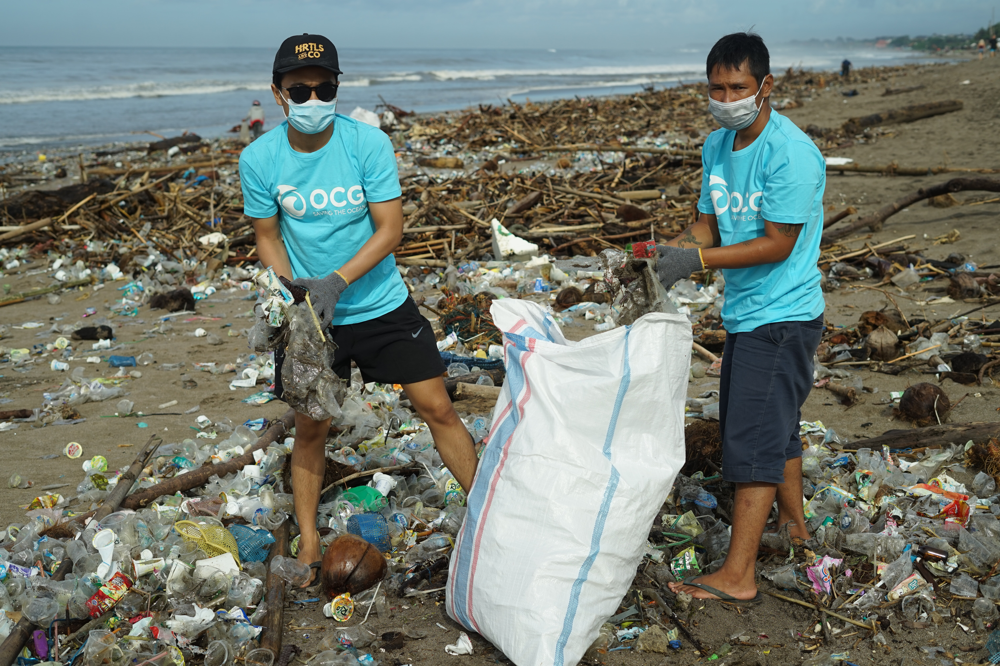
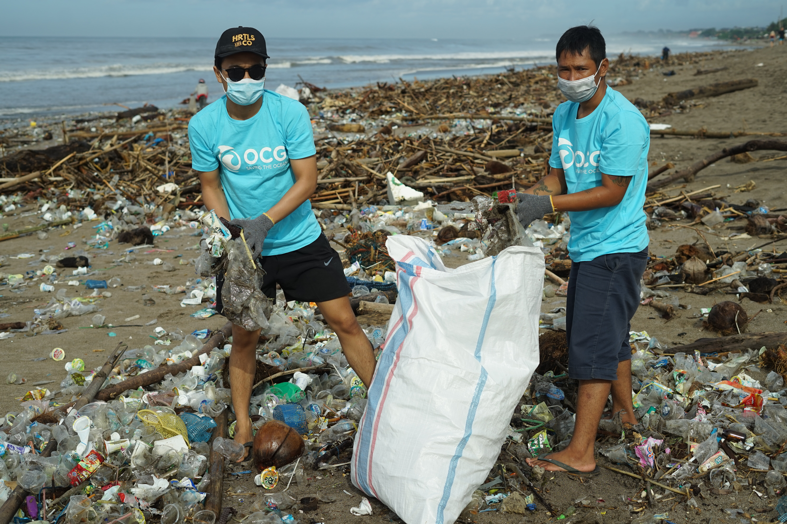

Brasil
Na Bahia já temos focos de esperança no quesito salvação dos mares. Cinco jovens ganharam um hackathon da Nasa em 2019 ao desenvolver um sistema para limpeza dos mares buscando a salvação da vida marinha e visando a sustentabilidade.
Mudança
Holanda
Na Holanda um jovem está revolucionado com as idéias e um desejo imenso de mudar o mundo. A matéria do site G1 trás mais detalhes incríveis!
Sim, nós podemos mudar o mundo!
Conheça a OCG Saving The Ocean
 
